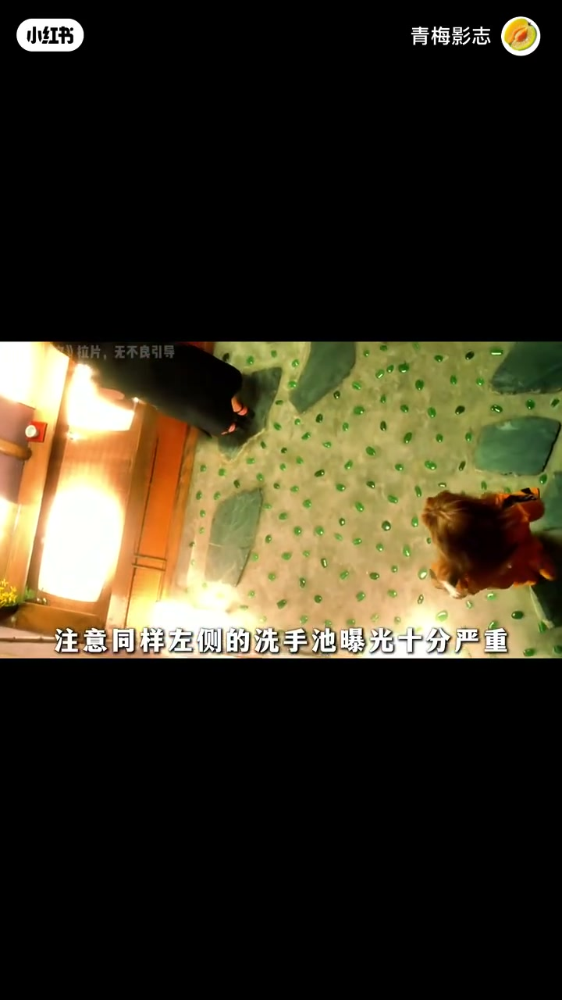
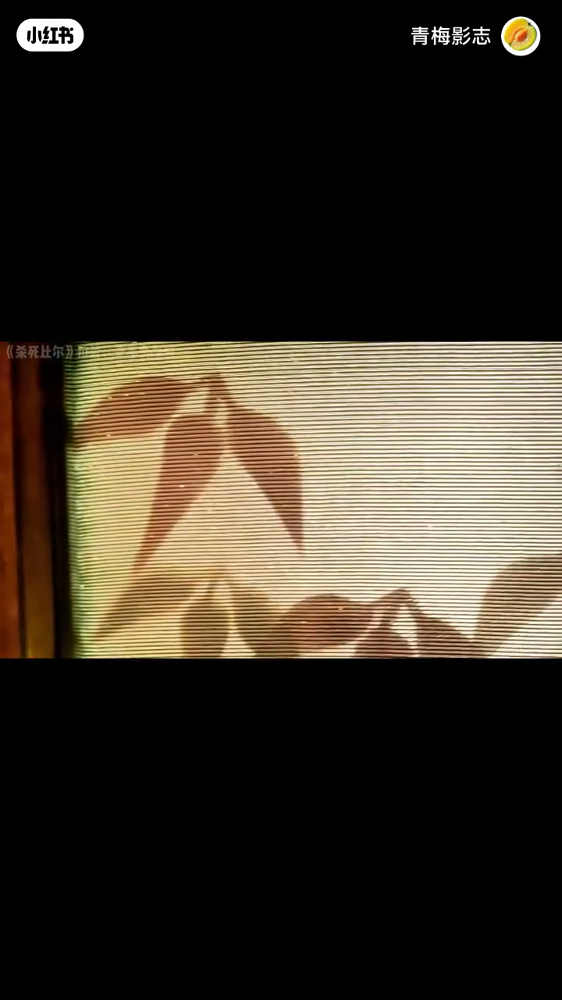
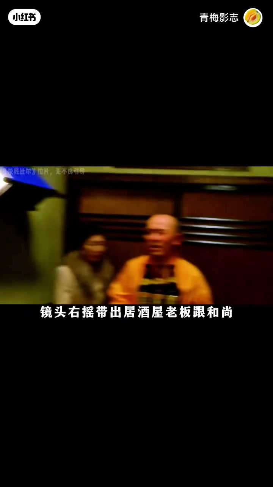
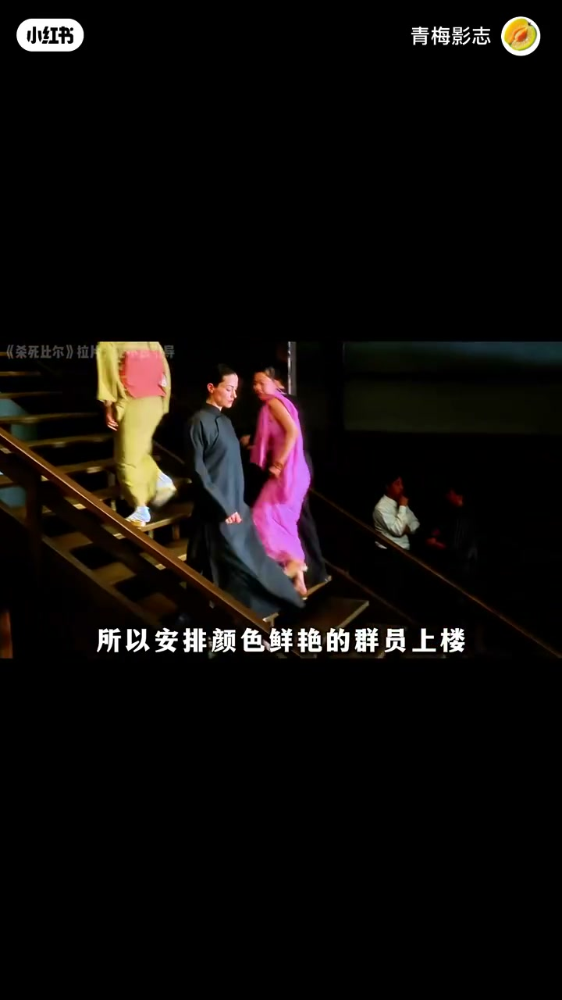
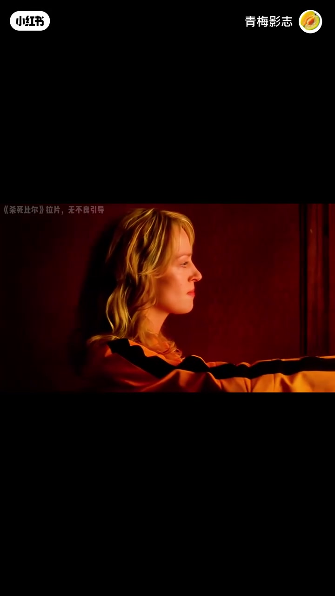

内容要点
「青梅影志」拆解昆汀式一镜到底：不是炫技跟拍，而是用曝光死角制造「上帝视角也看不见」、用更衣遮挡完成转场、用路人/老板/和尚/歌手/群演走位把镜头「移交」到下一目标。前两分钟 ASR 几乎失效，后半段口播+画面可互证；叙述结合字幕重建。
知识结构
镜头前推右摇发现人物；中段音乐硬切；洗手池严重曝光埋下视觉盲区。
昆汀用死角预示复仇不可控；女主进厕所以遮挡/叠化完成换装，脱掉机车外套。
跟路人出洗手间→右摇带出老板与和尚→上楼→歌手特写让音乐绕回→上摇到二楼。
黑场用鲜艳群演与白衬衫补色；舞池穿插后回到洗手间，镜头绕一圈再接女主主观推门。
一镜到底的丝滑，来自「盲区叙事＋遮挡转场＋人物接力调度」，不是相机一直往前推。
00:00-02:20曝光死角与更衣遮挡转场
口播指出：左侧洗手池曝光十分严重，是昆汀在制造视觉盲区——就算观众是上帝视角，也有看不到的死角，并预示复仇战会出现不可控因素。依据画面/字幕重建：摇臂下降后女主进入厕所，借更衣遮挡开始换装，脱掉机车外套，完成「谍战片式」时空跳转而不硬切。
前半段 Whisper 大量乱码（「脸」「静静静」等），人物身份与台词以画面调度为准，不臆造对白。


02:16-03:51路人接力、音乐绕回与色彩补丁
镜头左摇跟路人甲，另一路人调度走开，跟随走出洗手间；右摇带出居酒屋老板与和尚，两人边走边交代楼上黑帮不好惹，随后上楼。后拉右摇给歌手特写，音乐绕一圈又回来；上摇到二楼，楼梯两人入画，开始跟随人物走位——口播调侃「丝滑程度堪比德芙」。
镜头被黑色填满时，安排颜色鲜艳的群演上楼丰富色彩，白衬衫同理，否则黑衣同伴几乎看不见。舞池里群演横穿、小情侣拥吻后，背部跟拍回到洗手间门口；镜头从女主躲避位绕一圈再回到她身边，手机铃响，侧拍推门变主观视角，完成视觉交集。



完整转录（56段）
以下文本由 Whisper medium 模型自动转录，可能存在少量识别误差，已尽可能修正。
镜头前推右摇发现有人
脸�
静静静
硬切到下一首歌
同样左侧的洗手池曝光十分严重
这是昆汀在制造视觉盲区
就算观众是上帝视角
也有看不到的死角
也预示著这场复仇之战
会出现不可控的因素
等摄像机摇臂下降后女主进入厕所
谍话转场开始更换服装
把爱是的机车外套脱掉
镜头左摇跟随路人甲
另一个路人调度走
镜头跟随走出洗手间
镜头右摇带出居酒屋老板跟和尚
镜头跟随两人调度移动
这丝滑程度堪比得福
路上两人开始对话
大概意思就是交代楼上这群黑帮很不好惹
随后两人上楼
镜头后拉然后右摇
给歌手特写
音乐环绕一圈又回来了
你以为这就很丝滑了
镜头继续上摇
给到二楼
财物出门
从楼梯上去的老板两人入画
开始跟随财物的走位调度
镜头被黑色填满
所以安排颜色鲜艳的群员上楼
丰富画面色彩
后面的白衬衫也是这个原因
不然不仔细看都发现不了
他对面的黑衣服同伴
横穿舞池
右侧群演起身横穿
左侧小情侣在溺吻
镜头右摇变成背部跟拍
来到洗手间门口
开门
进入
镜头从女主躲避的坑位
循环一圈
重新回到卫生间女主所在的位置
某位导演联盟说
对对对
这就是我想要的效果
而此刻女主也准备完毕
手机铃声响起
接女主侧拍镜景
上前推门
视角变主观视角
视觉交集